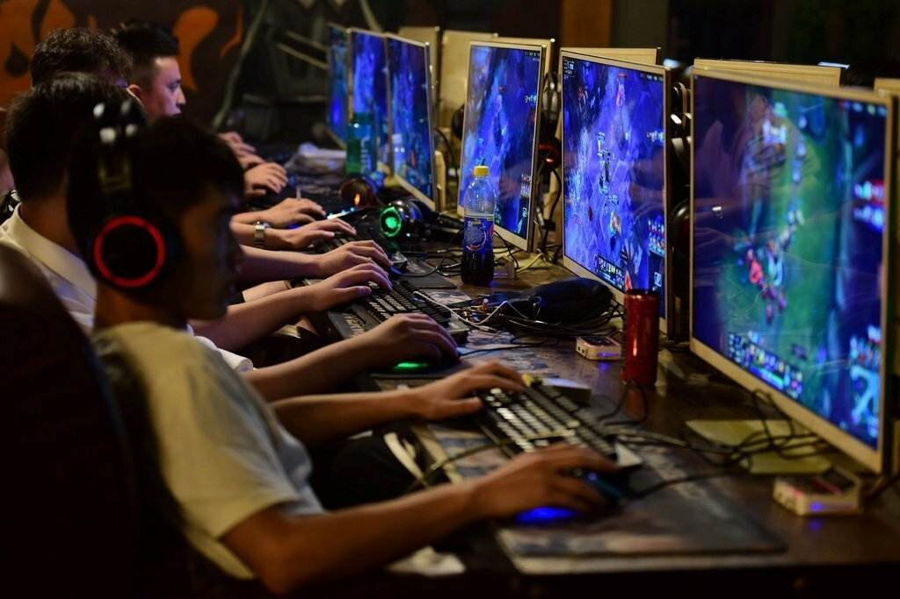

Перейти на вторую страницу сайта
Перейти на третью страницу сайта
Перейти на четвёртую страницу сайта
История компьютерных игр начинается в 1940-х и 1950-х годах, когда в академической среде разрабатывались простые игры и симуляции. Компьютерные игры длительное время не были популярны, и только в 1970-х и 1980-х годах, когда появились доступные для широкой публики аркадные автоматы, игровые консоли и домашние компьютеры, компьютерные игры становятся частью поп-культуры.
Появлению коммерческих компьютерных игр предшествовала уже сложившаяся индустрия развлекательных аркадных автоматов наподобие пинбола — механических игр, для запуска которых требовалось бросить монетку в щель приемника. Такие автоматы выпускались с XIX века, используя всё более сложные механизмы, а с 1930-х годов и электричество; параллельно развивались и музыкальные автоматы-«джукбоксы». Примечательным и необычайно сложным для своего времени аркадным автоматом стал Nimatron — электромеханический компьютер для игры в ним, спроектированный физиком Эдвардом Кондоном и выставленный на Всемирной выставке 1939-1940 годов в Нью-Йорке. В 1947 году было запатентовано «Развлекательное устройство на основе электронно-лучевой трубки» Томаса Голдсмита и Эстла Манна – оно считается первым специально предназначенным для игры устройством, выводившим изображение на экран, то есть «видеоигрой».
В начале 1950-х годов создавались специализированные компьютеры наподобие Nimrod опять же для игры в ним и Bertie the Brain и OXO для игры в крестики-нолики. Tennis for Two, разработанная физиком Уильямом Хигинботамом, имитировала игру в теннис с графическим интерфейсом, используя аналоговый компьютер и осциллограф как средство вывода в реальном времени. В 1948—1950 годах Алан Тьюринг и Дэйвид Чампернаун разработали алгоритм шахматной игры, однако компьютеры того времени были недостаточно мощными, чтобы реализовать этот алгоритм. Британский журналист Тристан Донован в книге Replay: The History of Video Games описывал 1950-е годы как «десятилетие фальстартов», единичных устройств, созданных в единственном экземпляре для выставок и разобранных позже — создатели этих устройств отбрасывали идею компьютерных игр как пустую трату времени.
К 1960-м годам развитие вычислительной техники — от вакуумных ламп к транзисторам, а от транзисторов к интегральным схемам — сделало компьютеры намного более мощными и доступными, чем прежде. В 1961 году группа студентов из клуба Tech Model Railroad Club (TMRC, клуб железнодорожных моделистов) при Массачусетском технологическом институте использовала новейший на тот момент компьютер DEC PDP-1 для создания одной из первых компьютерных игр – космического симулятора Spacewar!. Создатели игры охотно передавали код игры другим пользователям компьютеров PDP-1 в других университетах и лабораториях; сама компания DEC использовала игру для демонстрации возможностей компьютера потенциальным покупателям. PDP-1 был весьма дорогостоящим компьютером — 120 тысяч долларов США — и количество проданных компьютеров было ограничено несколькими десятками.
